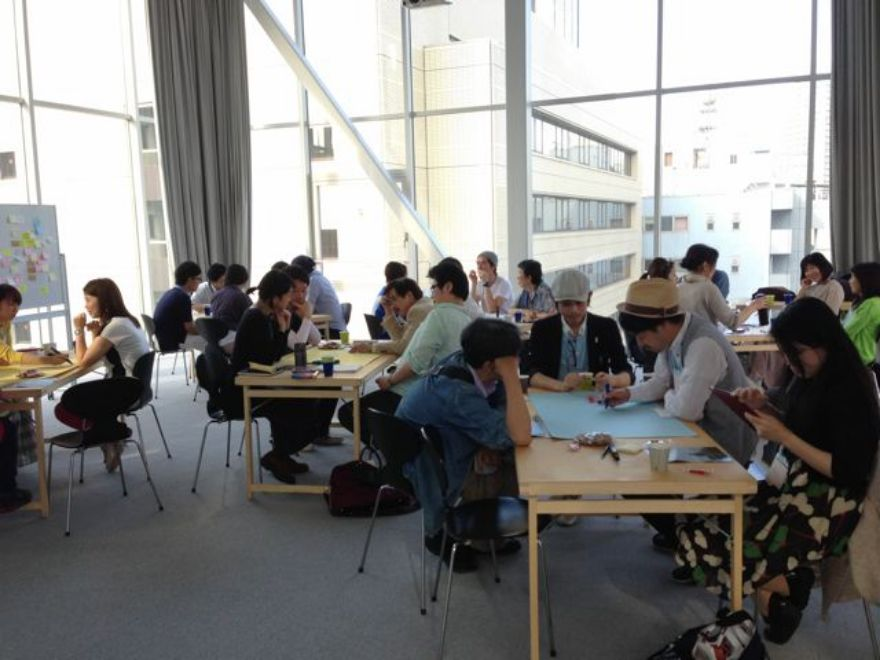
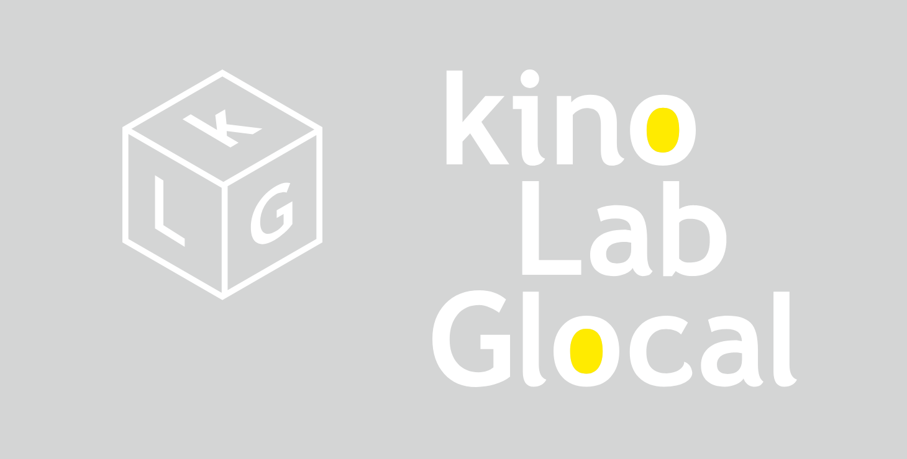

監督：ステファニア・トルス
2020年 / アイスランド / アイスランド語 / ドキュメンタリー / 78分
原題：Húsmæðraskólinn / 英題：The School of Housewives
後援：アイスランド大使館 提供・配給：kinologue
© Mús & Kött 2020
2010年 / フィンランド / フィンランド語 / ドキュメンタリー / 81分 / 原題：Miesten vuoro / 英題：Steam of Life
監督：ヨーナス・バリヘル、ミカ・ホタカイネン
後援：フィンランド大使館、公益社団法人 日本サウナ・スパ協会
提供・配給：アップリンク+ kinologue ©2010 Oktober Oy.
監督：ウナ・ローレンツェン
2016年 / アイスランド・ポーランド / 英語・アイスランド語 / ドキュメンタリー / 76分 / 原題：YARN
後援：アイスランド大使館
提供・配給：ミッドシップ + kinologue
© Compass Films Production 2016
監督：ヨールン・ドンネル
2015年 / フィンランド / フィンランド語 / 85分 / 原題：Armi elää! / 英題：Armi alive!
協賛：Marimekko 後援：フィンランド大使館
提供・配給：パンドラ + kinologue
© Bufo Ltd 2015
監督：マリア・リンドバーグ
原作：トーベ・ヤンソン「ムーミン谷の彗星」（講談社刊）
主題歌：ビョーク “The Comet Song”
2010年 / フィンランド・ポーランド・オーストリア / 英語 / 75分 / 英題：Moomins and the Comet Chase
後援：フィンランド大使館
提供・配給：Child Film + kinologue
© Filmkompaniet / Filmoteka Narodowa / Jupiter Film / Moomin Characters™
監督・脚本：ペトリ・ルーッカイネン
2013年 / フィンランド / フィンランド語 / 80分 / 原題：Tavarataivas / 英題：My Stuff
後援：フィンランド大使館
提供・配給：パンドラ + kinologue
© Unikino 2013

Kino（映画）でdialogue（対話）するワークショップ・プロジェクト「kinologue」
2011年より東京・神奈川・福島・岡山・福岡・佐賀・フィンランド等にてワークショップを計36回開催、2020-21年はオンラインでも開催。過去の実施記録が前サイトと共に消滅してしまったが、自社配給作品以外で題材として取り上げた映画は『ちいさな哲学者たち』『イエローケーキ』『それでも生きる子供たちへ』『モテキ』『かもめ食堂』『ムーンライズ・キングダム』『ル・アーブルの靴みがき』『マイ・マザー』『東京物語』『ビフォア・ミッドナイト』『ミトン』『ザ・フューチャー』など多岐にわたる。
2020年以降のワークショップについては、下記noteにて
【一般読者さま】
Kinologue booksの出版物は全国の書店並びに各ネット書店にてお求めいただけます。
また、下記より直接のお求めも可能です。
【書店さま】
Kinologue booksの出版物は、下記の扱いにてお届けいたします。
取引代行トランスビュー経由での委託販売
・新規のお手続き不要
・1冊からのご注文・返品随時可
・納品送料無料＝弊社負担、返品送料＝御社ご負担
・原則として翌営業日発送
・直取引の条件はトランスビューの商品と同様
詳細はトランスビュー書店向け情報にてご確認ください。
＜トランスビューとお取引がある書店さま＞
BookCellerよりご注文ください。
またはトランスビューへ直接ご注文ください。
FAX: 0120-999-968 / TEL: 03-3664-7334 / order@transview.co.jp
＜トランスビューとお取引がない書店さま＞
下記のいずれかをご検討ください。
◎ トランスビューとの取引申し込み TEL: 03-3664-7334
◎ 取次ルート（買切のみ）にて注文
八木書店経由で各取次会社へご納品します。
お申し込みはトランスビューへ TEL: 03-3664-7334 / order@transview.co.jp
◎ kinologue booksとの直接取引（買切/委託） : books@kinologue.com へお問合せください。
その他、ご質問・ご要望などありましたら、お手数をおかけしますが、
books@kinologue.com までご連絡をお願いいたします。

映画は「観る」だけで終わらない楽しさがある。
その楽しさを起点に、グローバルにもローカルにもつながることを探求する「Kino Lab Glocal」。
独立系映画配給・宣伝会社で宣伝担当として100本近い映画に携わってきた森下詩子が、
2011年にワークショップ・プロジェクトとして「kinologue」を立ち上げる。
※kinologueはkino（ドイツ語で映画）とdialogue（英語で対話）を合わせた造語
2014年よりkinologue にふさわしい北欧に特化した映画配給をスタートさせ、6本の映画を共同/単独配給（2022年3月現在）。
同年、1本目の配給作品『365日のシンプルライフ』の「その後」イベントとして、フィンランドのリサイクル・カルチャー・イベント「クリーニングデイ」を日本に持ち帰り、クリーニングデイ・ジャパンの活動を開始、日本全国で累計428会場にて開催（2022年3月現在）。
2020年に出版流通への新たなチャレンジとして、出版レーベル「kinologue books」を立ち上げる。
2022年にオンライン・イベント等に対応するバーチャルシアター「kinologue online」を開設する。